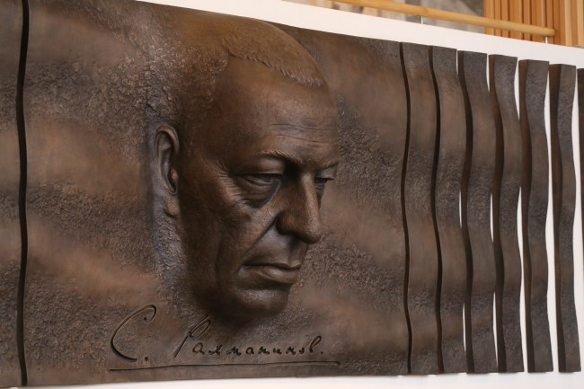
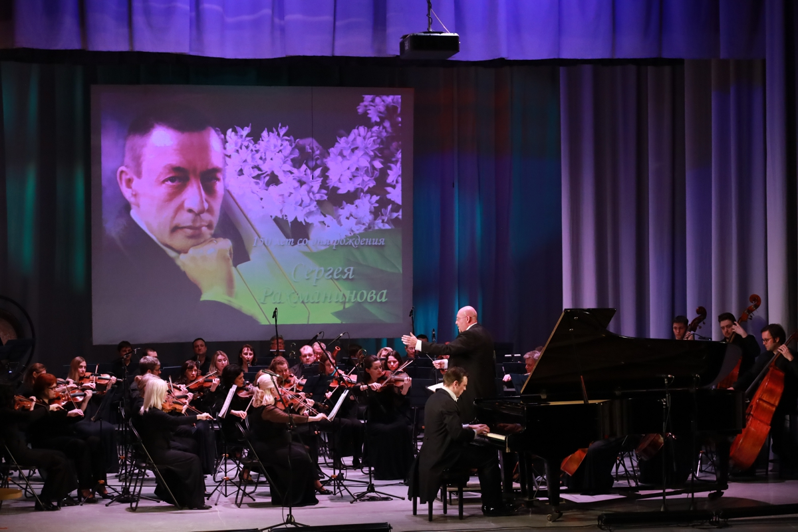
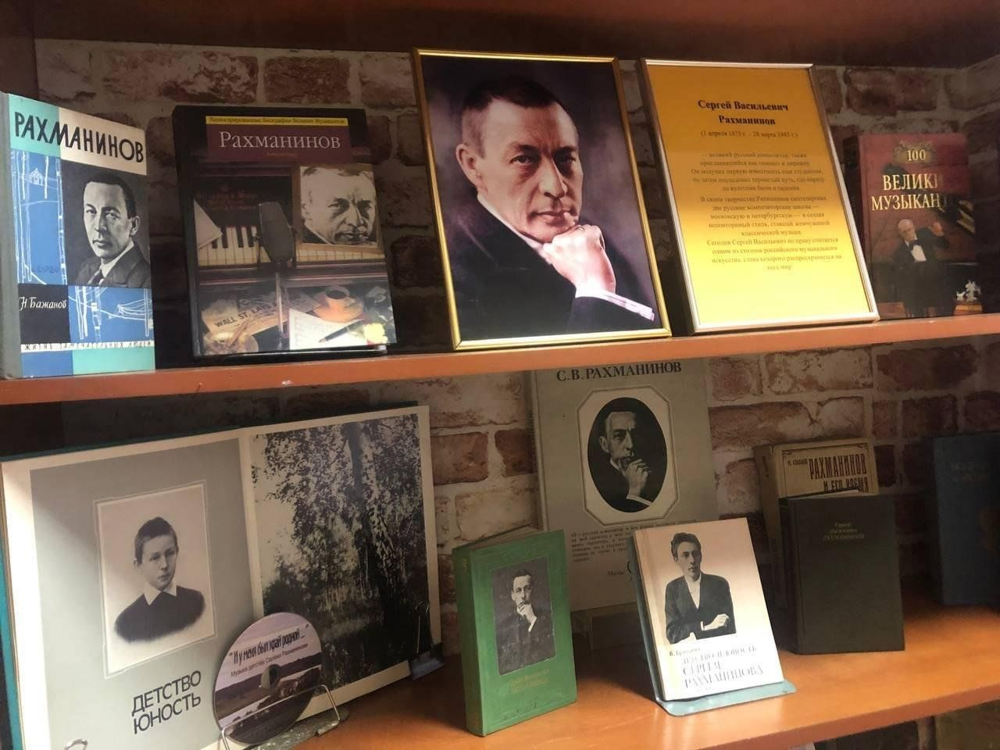
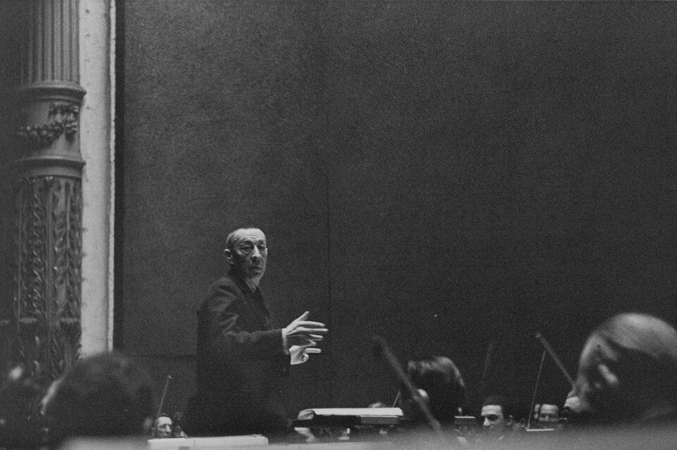

Ключевые события
Открытие монументального барельефа
2018, Концертный зал имени Рахманинова «Филармония-2». Скульптор — Андрей Коробцов.
Юбилейные концерты по всему миру
Серия концертов в честь 150-летия композитора прошли в Москве, Санкт-Петербурге, Нью-Йорке и Лондоне.
Специальные выставки и мастер-классы
Организуются в филармониях и музыкальных школах по всему миру, включающие лекции и мастер-классы.
Спектакли и постановки
На сценах театров и концертных залов проходят постановки с музыкой Рахманинова, включая оперы и балеты.
